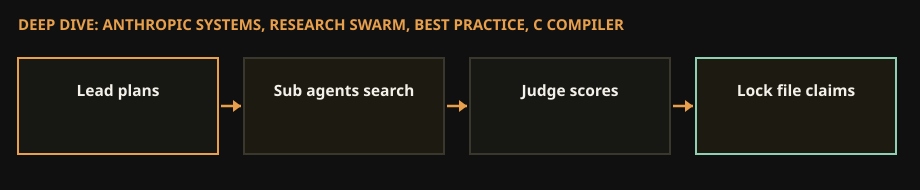

Deep Dive: Anthropic Systems, Research Swarm, Best Practice, C Compiler
Four primary Anthropic sources read in full: the multi agent research system, the current Claude Code best practice doc, the C compiler build, and the self build report. Confidence: High, with self reported figures marked as lab claims.

Multi agent research system: structure
One lead agent plans and spawns parallel sub agents. Each sub agent searches in iterations and returns a compressed result. The lead compiles the final answer. On their internal research eval, the swarm beat a single top model agent by 90.2 percent. Token facts from the post: agents use near 4 times chat tokens, and multi agent systems near 15 times. Token count alone explains 80 percent of score variance on their benchmark.
The 8 prompt principles
- Think like your agents: run simulations and watch where the agent mind goes wrong.
- Teach the lead to delegate: each sub agent gets an objective, an output form, tool and source guidance, and clear borders.
- Scale effort to task size: simple work gets 1 agent and 3 to 10 tool calls; comparisons get 2 to 4 sub agents at 10 to 15 calls each; hard work gets 10 plus sub agents with split duties.
- Tool design is critical: inspect all tools first, match tool to intent, prefer a specialist tool over a general one.
- Let agents improve their tools: one agent that rewrote weak MCP tool descriptions cut task time by 40 percent.
- Start wide, then narrow: broad search first, deep read second.
- Guide the thinking: extended thinking for the lead plan, interleaved thinking for sub agents.
- Parallel calls: the lead starts 3 to 5 sub agents at once, sub agents run 3 plus tools at once. Research time fell by up to 90 percent.
Eval method
Start at once with near 20 real queries. One judge call per answer, one prompt, a score from 0.0 to 1.0 plus pass or fail. Rubric: fact accuracy, citation accuracy, completeness, source quality, tool efficiency. Human review still matters: their humans caught a source bias toward SEO farms over academic PDFs that the judge missed.
Claude Code best practice, current doc
- Split instructions by force: prompts, CLAUDE.md, and skills guide the model; hooks, deny rules, and managed settings bind the harness. Put each rule in the layer that can hold it.
- CLAUDE.md stays short: exact test, typecheck, and lint commands, the single test command, warnings on code that misleads, decisions that live outside the repo, and any point corrected twice. The memory guide caps the file under 200 lines. Scope rules live in .claude/rules/ with a paths filter. Side effect flows become skills with model invocation off.
- The check ladder: a prompt instruction first, then a goal condition that a second model rechecks each turn, then a Stop hook that blocks the stop and feeds the error back, with a cap of 8 blocks, then a code review in a fresh sub agent. Demand evidence each time: command plus output, or a screenshot.
- Hooks for hard rules: a formatter after each edit, a block on edits under migrations, deny rules on secret files. Sandbox mode for unattended runs.
- Cost control: cheap models for sub agents by file setting, short summary demands, usage checks. Clear context between tasks. Compact with a focus note when a session must live.
- Unattended runs need five answers first: the done definition, the self check, the allowed scope, stop limits in turns and dollars, and the destination plus approver. Script form uses the print mode with bare, system prompt append, MCP config, settings, allowed tools, and JSON output flags.
- Parallel form: worktrees per task, one mechanical change split into 5 to 30 worktree units, each with its own PR.
- Stop doing list from the doc: aggressive context care, all caps emphasis, sub agents for context cover alone, delegation for a better answer, think hard phrasing, and keep going exhortations.
The C compiler build: harness over orchestration
Sixteen agents built a Rust C compiler in two weeks: near 2,000 sessions, just under 20,000 dollars, 100,000 lines, a bootable Linux 6.9 on three chip families, and 99 percent pass rates on most compiler test suites. No orchestrator agent and no agent to agent talk. The harness is files:
- Each agent works in a fresh container, clones a bare repo, and pushes when done.
- Task claim: write a text file into current_tasks/, such as current_tasks/parse_if_statement.txt. Git sync forces a second agent to pick a new task. Work, pull, merge, push, delete the lock file.
- Agents pick the next most clear problem and keep running notes on failed paths.
- Test quality carries the system: strong verifiers first, CI added when new features broke old ones.
- Context hygiene: few lines of live output, detail in log files, the word ERROR plus a reason on one line for grep, pre computed aggregate stats.
- Time blindness fix: rare progress prints, and a fast mode that runs a fixed random 1 or 10 percent sample per agent.
- The kernel block: all agents hit one bug in one giant task. Fix: use GCC as an oracle. Compile most files with GCC and a subset with the new compiler, swap subsets to bisect, then delta debug the file pair.
Self build report: the review bot
Anthropic states past 80 percent of merged code comes from Claude as of May 2026, with a typical engineer merging 8 times the 2024 code volume per day, a figure the post itself flags as soft. The transferable system: an automated reviewer reads each change for bugs and security before merge. A retro check found the bot would have caught near one third of the bugs behind past incidents. Their stated bottleneck: human review. The bot exists to move that bottleneck.
Apply this to your work
Your research lanes map to the swarm design with no stretch: one lead holds the question and the claim ledger, sub agents take source chunks, and the eval rubric from this page grades each brief on fact accuracy, citation accuracy, completeness, source quality, and tool efficiency. Your paper builds map to the compiler harness: a current_tasks folder with lock files gives your parallel paper lanes a claim system that survives session death, and the GCC oracle trick maps to a source oracle: one trusted text per claim set, subset swaps to bisect a wrong claim to its source.
Replication checklist
- Write your research rubric as one judge prompt with the five criteria and a 0.0 to 1.0 scale.
- Add a current_tasks lock folder to your next multi lane build.
- Set your sub agent models by file. Cheap for search, top for synthesis.
- Write your five unattended answers into the task card template: done, check, scope, limits, approver.
Prompt file: prompts/research-swarm.md.
Visual map of this page
Two views of one page: a Mermaid flow for work order, rendered by the local Mermaid library in this folder, and a markmap for concept groups.
Mermaid source, for offline read
flowchart TD A[Lead agent] --> B[Sub agent 1] A --> C[Sub agent 2] A --> D[Sub agent 3] B --> E[Compressed returns] C --> E D --> E E --> F[Lead synthesis] F --> G[Judge: 5 criteria]
How to read the flow diagram. Step 1: start at the first box. Step 2: follow each arrow to the next stage. Step 3: at a branch box, read both paths before a choice. Step 4: a loop arrow means work returns for one more pass vs a test.
Markmap: concepts on this page
- Deep Dive: Anthropic Systems, Research Swarm, Best Practice, C Compiler
- Swarm
- 8 principles
- 90.2 percent eval gain
- Near 15x tokens
- Best practice
- Short rule file
- Check ladder
- Five unattended answers
- Compiler
- 16 agents
- Lock files
- GCC oracle bisect
- Swarm